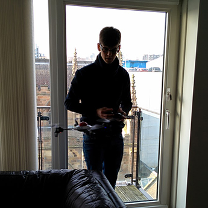
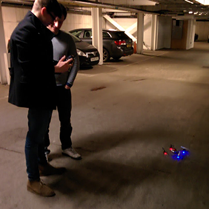
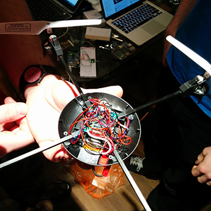
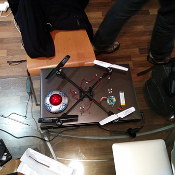
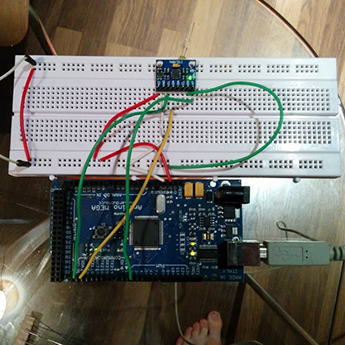
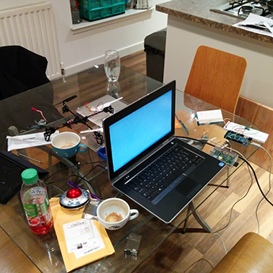
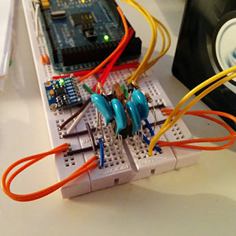
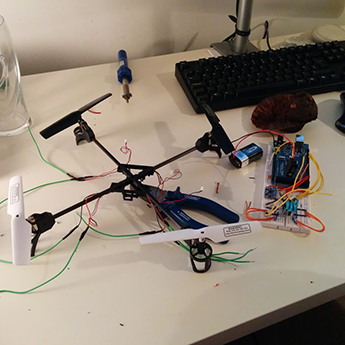
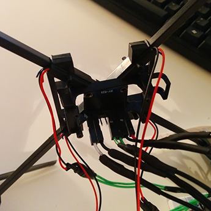
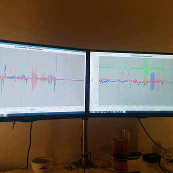

When we first purchased the Quadcopter, we gave it a test flight in Tim’s flat.


To test test the capabilities of the machine, we tried it in the carpark which was a much bigger space to fly around in
We started to dissect the Quadcopter by removing the central shell of the machine. Quite a grizzly sight, there was a lot of careful surgical work to be done to remove the control unit while keeping the rest of the electronics in tact.


With the previous control unit removed, the model was in the correct form for us to start wiring the motors up to our arduino and get things moving.
Another main component was the Gyroscope/Accelerometer, pictured here on the breadboard. We wired the chip up to the arduino and received and handled the serialised output from it while twisting and turning it in different directions.


A typical Smeed Aviation afternoon. Breadboards, laptops, microcontrollers, coffee.
Worried about burning the motors on the Quadcopter out, we first tested output from our Arduino on an old computer fan. We got it spin, and were making progress!


Buoyed by our success with the Fan, we extended the wires on the Quadcopter motors to give us a bit of space to work with. None of us had done a lot of electronics before, and as a result these tasks were proving to be quite a challenge.
Things were coming together. The motors were all wired up to the breadboard, and the gyroscope was fixed to the centre of the Quadcopter to generate the most accurate readings possible.


These are the real-time line graphs which we used to visualize the output data from the gyroscope. The graph on the left is the representation of the rotational forces acting on the sensor, while the graph on the right is of the acceleration and effect of gravity.
Our final Quadcopter, still tethered to the breadboard but controllable remotely from a Wii remote. Not a bad effort from a team without electrical expertise.